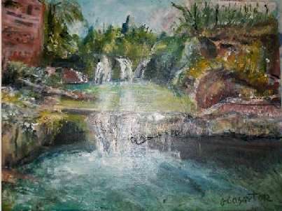
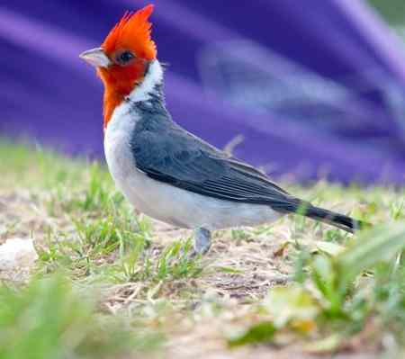
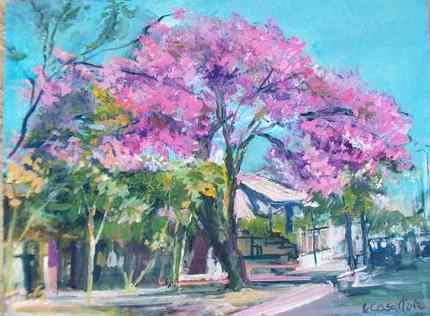
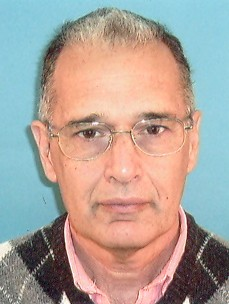
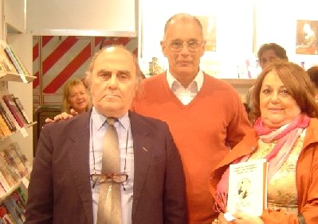

ELIJO SER...
ELIJO SER...
Autor: CARLOS DANIEL LAURANS (Argentina)-----------------------------------------
 "Misterio de la abundancia II" Pintura de Graciela María Casartelli |
¡Nuevo! PROPUESTA
PROPUESTA
Me gusta caminar entre la gente, mezclarme para observar las
mil historias y misterios que se reflejan en sus caras.
Por detenerme a hablar con ellos, llegué a comprender que detrás de la imagen, son seres humanos con más o menos los mismos problemas comunes,
tal vez iguales miedos y todos tratando de protegerse sin advertir que por vivir de esa manera, se les deteriora mucho más el corazón que la apariencia.
Y eso, generalmente, los aparta del amor.
Percibo también, que determinadas personas, aún sin conocerlas ni hablar con ellas, generan atracción o rechazo.
Esto es por las vibraciones que emiten: nerviosismo, negatividad, alegría o ternura, a veces.
Es una proyección inconsciente, que genera una respuesta similar en el entorno (lo que se emite, vuelve). Esto ocurre porque todos somos
seres atrapados en nuestra forma de pensar, y estas ideas son energías y producen efectos.
Algunos nos hacen sentir incómodos y tendemos a apartarnos, pero de otros recibimos una sensación agradable, que invita a prolongar el momento.
La buena noticia es que nosotros podemos generar conscientemente esas vibraciones. Es cuestión de abrir el corazón: Si comprendemos que son
seres (algunos casi desvalidos física o emocionalmente), que viven luchando como pueden para conseguir lo que creen importante, entonces:
¿por qué no rodearlos mentalmente de amor?.
Simplemente desearles que encuentren su camino, sea el que hayan elegido.
Y nadie tiene porqué enterarse. Es una práctica privada, de uno hacia el otro, sin manifestaciones físicas, y en consecuencia no
se corre ningún tipo de riesgo, ni se debe temer a la opinión de los demás.
Comunicación directa, de corazón a corazón. De eso se trata.
-- Vibraciones de amor --
A modo de prueba, podemos comenzar con nuestros afectos cercanos: imaginar abrazarlos y experimentar lo que se siente, luego también
con extraños y aún con quienes nos hayan perjudicado, solo porque piensan diferente. A todos les va a llegar esa vibración.
Creo que es una maravillosa oportunidad de trabajar por el amor y la paz, porque nosotros, como integrantes activos de esta sociedad,
tenemos mucho por hacer.
No hay que olvidar que así como pensamos, actuamos y así andamos también. En consecuencia, por el principio mencionado de causa y efecto,
podemos seguramente esperar un futuro rodeado de amor.
Es cuestión de decidirse, de escuchar esa campanita que suena allí, donde nacen los sueños… y ponerse a trabajar.
Algunos anteriores
SOLA
Sola, parada en cualquier esquina.
Dura, en apariencia
para la venta de un amor ficticio.
Frágil, en su interior
como una niña descalza,
sus ojos la delatan.
Sin esperanzas, ni fe,
y con un sólo objetivo.
sobrevivir
hasta mañana.
|
Algo Sencillo
Al fin,
fue algo sencillo.
Incontables tiempos de sueños, … tantas cicatrices;
Mil decisiones de no volver a intentarlo,
una inmensa soledad…
y bastó una sonrisa.
|
EL INTRUSO
Esta mañana, un intruso invadió el reino de los pájaros.
A medida que avanzaba, era el centro en un círculo de silencio que terminaba a minutos de haber pasado, mientras era vigilado por guardianes de ojitos atentos y patitas de alambre. Las que no se dieron cuentas fueron las cotorras, que parecían involucradas en un conflicto, pero bien observadas, sólo era confraternidad de vecinas en propiedad horizontal. Los árboles y los arbustos, tal cual deberíamos ser los hombres, abriendo los brazos entregaban su esencia a la vida, pero nada de ello percibió esa persona. El sólo buscaba un poquito de sombra y de paz. |
 |
Hubo un tiempo en que habíamos logrado un acuerdo. |
Ella va, camina por su jardín, acariciando a las flores. En el ocaso, el brillo que la rodea se expande, alcanza a los pájaros que atrae y cantan, alabando a la vida. Ella es amor. y por eso, escribe. |
 "Mi lapacho en flor" Pintura en acrílico de Graciela María Casartelli
|
 CUANDO SE APAGUE LA LUZ
CUANDO SE APAGUE LA LUZ
En este largo camino
de etapas turbulentas,
descansos ocasionales,
viviendo con intensidad
encuentros, desencuentros
y olvidos.
Me pregunto
habré dado
soñado
o dejado
lo suficiente?
Y cuando se apague la luz
¿Habré amado lo suficiente?
 SI PUDIERA
SI PUDIERA
En cada poema que entregas
transparentas el alma,
mujer soñada.
Los duendes sensibles
esparcen tu luz
a manos llenas.
A eso has venido,
pequeño pájaro azul.
A despertarnos al amor
para acercarnos a Dios.
Si pudiera recibir
aunque sea tu mirada
Si pudiera retener
aunque sea tu sonrisa
Si notaras que existo…
Sabrías que tu destino
es ser amada.
Aprenderías que el vuelo
se potencia si es de a dos
Que los sueños se cumplen
si nacen del corazón.
Que todavía es posible…
. . .
 Otro aporte del autor en esta Web: "La felicidad"
Otro aporte del autor en esta Web: "La felicidad"
 Elijo ser...
Elijo ser...
"Alguna vez me preguntaron porque escribía,
y le contesté que sentía que tenía que hacerlo, y además,
sabía que de esta manera podría
llegar a personas que no conocía y entonces, si podía generarles
buenas vibraciones o sembrarles alguna idea que les ayudara a mejorar
su calidad de vida, el esfuerzo valía la pena."
"Trato de enfocarme en un camino de constante
crecimiento. Básicamente soy una persona bastante simple, me gusta la
buena música y
que todo vibre en armonía. Tal vez por eso siempre me esfuerzo en ayudar.
En esta decisión de vida, la escritura es uno de los aspectos en que
lo desarrollo. También frecuentemente me brindo para escuchar y
solucionar algunos problemas de la gente,que esté a mi alcance. Regalar
cosas, me alegra desde el momento en que lo pienso.
Por otra parte, he hecho cursos de zen (¿escuchaste hablar de Zen y Larga
Vida?), en él llegué a 4º nivel, y últimamente otro
bastante
similar pero un poco más completo (Llaves Marianas). En ambos aprendí
sobre meditación, sanación y vibraciones. Es decir, conozco
un poco de energías."
Éstas, entre otras expresiones, fueron las
primeras que Carlos Daniel, ofreció en mi primer acercamiento,
encantándome su sencilla apertura que ya me decía mucho acerca
de su persona. Entonces, me remitió al prólogo
de su libro próximo a editar:
 |
"Durante muchos años luché por conseguir
mi ideal de vivir bien. |
Encontré personas
que abrieron su corazón, extendieron sus manos y me guiaron;
me enseñaron a conocer el amor. Dejé de pensar en el afuera y comencé a trabajar en mi interior. Era necesario cambiar, modificar estructuras, enfocarse en diferenciar lo importante y permanente de lo temporal. Aprendí a ver en las personas un igual, más allá de las apariencias de sexo, personalidad o status social. Todos tenemos inquietudes, miedos, sueños, y buscamos ser felices. Y todos también padecemos falta de comunicación; estamos asediados por intereses ajenos, buscando evitar que pensemos, porque necesitan masificar para poder manipularnos, física y mentalmente. |
En el Encuentro que organizó
Fundación de Poetas
|
A partir de eso, me di cuenta que valía tanto como los
otros. Mis opiniones son tan válidas como cualquiera, y me corresponde
y
merezco un lugar en el mundo como persona.
Persona, con fallas y todo.
Aprendí a reconocer mis errores, y a perdonarme.
Y también pude lograr un equilibrio entre la mente y el corazón.
Ahí empezó el verdadero cambio.
Sintiéndome bien y observando a otros, nació la necesidad de
ayudar. Ya conocía como se vive vibrando mal, y quise que no les pase.
Estudié técnicas y comencé el trabajo de sembrador. Sé
que no puedo imponer nada, pero sí que con la palabra, modificando
los
enfoques en los problemas, se puede producir el cambio que necesitan.
Simplemente ofreciendo el hombro, el oído o el corazón ayuda
muchísimo.
Y encontré al fin lo que buscaba. La felicidad no estaba en el dinero,
éxito o reconocimiento.
Estaba en dar.
Fue un proceso maravilloso. Poco a poco, al ver los resultados que obtenía,
fui ganando confianza
y me animé a abrirme más.
Al principio era un tímido ida y vuelta (todo lo que se emite vuelve),
y lo que recibía me gustó.
Entonces decidí priorizarlo. No era solamente trabajar por otros, lo
hacía por mí también.
Sé que mi voz interior es la de Dios, y que respondiendo sólo
soy su canal de expresión,
pero me hace tan feliz que a veces siento una presión en el pecho.
Son las ganas de dar. Me lleno de amor, de luz. Y no se agota.
Así, pasada la mitad de mi vida, soy feliz."
Por todo esto, "Elijo ser...".
 En el stand de la SADE en la Feria del Libro de Buenos Aires, con el Dr. Elías Galatti, abogado, escritor que ha salido 3ro. en un certamen mundial de poesía, y este año le han adjudicado la tercera medalla de oro en el Bizz Award de Estados Unidos por un trabajo sobre violencia, y Vilma Osella, periodista de Clarin, La Razón y varios diarios más, y escritora de primerísimo nivel |
"Elijo ser un sendero
en el bosque, para que cada vez que alguien me recorra, pueda llevarlo
a lugares que lo sorprenda. Que no encuentre huellas profundas del pasado, sólo camino llano al costado de un arroyo, con pequeños arbustos florecidos, escuchando el canto de pájaros ocultos, y sintiendo una suave brisa tibia que lo envuelva. Y cuando lleguen a un claro con mariposas jugando a ser hadas, cuando atraviesan rayos de sol filtrados entre el follaje, podrán descansar apoyando su espalda en el tronco de un árbol. Algunos disfrutarán del momento y seguirán su viaje. Otros comprenderán que allí encontraron mucho más que un buen lugar. |
Comenzarán a percibir la intensa vibración
que emiten su hermano el bosque y cada uno de sus seres; tendrán la oportunidad
de meditar,
de darse cuenta si realmente está en el camino correcto; donde están
las verdaderas cosas importantes, analizar sus escalas de valores, y
verificar si han tomado las decisiones correctas para sentirse plenos en cada
aspecto de su vida.
Porque a veces, por perseguir determinadas metas se destruye mucho más
que lo buscado. Nada menos que el amor, por ejemplo.
Y entonces se preguntarán: ¿Valió la pena?.
Comprenderán que sus vivencias son el resultado de elecciones que hicieron
en el pasado y de su actual forma de pensar.
Entenderán también que el único camino, es a través
del amor. Y si no están en él, deberán cambiar estructuras,
aprender a perdonar,
perdonarse, animarse a pedir perdón.
Es necesario, porque la vida plena, totalmente conectada con las emociones,
realmente vale la pena.
Si sólo uno de los caminantes recorre su camino interior, abre el corazón
y decide comenzar a vivir por el amor, se sentirá renovado,
abandonará el bosque con una decisión tomada, mucha más
fuerza y la mirada llena de luz.
Entonces, y sólo entonces podré decir: Misión cumplida,
estoy en paz."
Reseña curricular:
Carlos Daniel Laurans nació el 19 de octubre
de 1.948, en Santo Tomé ,Provincia de Santa Fe,Argentina.
E-mail: carlosdlaurans@yahoo.com.ar
Participó en once Antologías desde
el año 2004: En Voz Alta - SADE Santo Tomé - relatos y cuentos
Aires de Libertad - Centro de Estudios
Poéticos de Madrid - y el 2006, Poetas de las Dos Orillas - Ed. Botella
al Mar de Montevideo - Poema Letras y Voces 2006 -
Ed. Nuevo Ser de Buenos Aires - Relatos; Voces sobre las colinas - Ed. Namastei
de Victoria (E. Ríos) - Relatos Antología -
SADE Córdoba - Cuento Lluvia de Recuerdos - Centro de Estudios Poéticos
de Madrid - Poema;Laberinto de Sentimientos -
Ctro. de Est.Poéticos de Madrid - Poema;Cartas de Amor - Ed. Mis Escritos
de Buenos Aires - Narrativa
Durante 2005, publica el Cuento "Relatos Andantes"- Ed. Dunken de
Buenos Aires -
Recibe Diploma y medalla de honor como autor destacado del año 2006 Editorial
Nuevo Ser (Buenos Aires)
- Integra la Comisión Directiva de la Filial
Santo Tome de la Soc. Argentina de Escritores.
- Asociado a Gente de Letras de Buenos Aires.
- Delegado en la provincia de Santa Fe de la IFLAC Argentina (Sede argentina
del Foro Internacional de Literatura y Cultura de la Paz)
-Integra Poetas del Mundo (Chile)
-Designado Personalidad del Arte Universal (Washington)
Ha participado en encuentros literarios en ciudades
de Argentina y Uruguay.
En su vida laboral ocupó el cargo de gerente del Banco de
Santa Fe, y fueoperador en comercio exterior; en la actualidad se desempeña
en el Ministerio Coordinador de la Casa de Gobierno de Santa Fe.